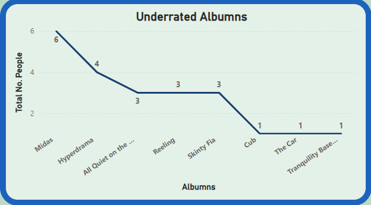

Most UnderRated Album Survey Results!
The chart shows that the most underrated Album is 'Midas'
By Wunderhorse. The album hasnt even been released yet,
suggesting it may not be one to miss!
Runners up, with only a couple less votes, is HyperDrama
by Justice. This album was only released a couple months
ago and is a fantastic album with loads of great collaborations.
The remaining votes where split between Reeling by The Mysterines
(My favourie album at the moment), Skinty Fia by Fontaines D.C,
Cub by Wunderhourse, The Car, and Tranqulity Base Hotel and Casio,
Both by Arctic Monkeys.
